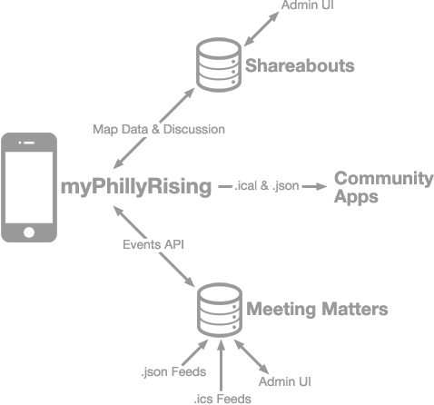
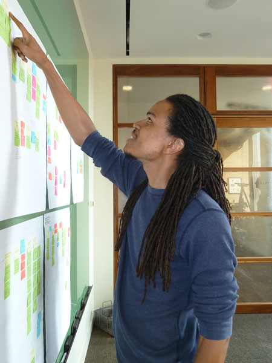

myPhillyRising
A mobile tool for stronger neighborhoods, from OpenPlans.
 Tamika lives in the Johnson Homes at 25th & Norris. She hears about myPhillyRising on Facebook. Sounds useful—it's usually impossible to find out when the Honickman Center is open. She visits myPhillyRising on her HTC Inspire, and she's impressed by how much information is right there. Finding this on the City website is way too hard, and some of that information is wrong. She checks out the learning center hours, and sees that there's a drop-in skills clinic event happening next week as well.
Tamika lives in the Johnson Homes at 25th & Norris. She hears about myPhillyRising on Facebook. Sounds useful—it's usually impossible to find out when the Honickman Center is open. She visits myPhillyRising on her HTC Inspire, and she's impressed by how much information is right there. Finding this on the City website is way too hard, and some of that information is wrong. She checks out the learning center hours, and sees that there's a drop-in skills clinic event happening next week as well.
 Jim lives in Strawberry Mansion. He's taking part in the Citizen Engagement Academy when it visits the neighborhood in March. He's keeping an eye on a few vacant buildings on his block, and some of the sessions with city staff sound useful. After hearing about it at a neighborhood meeting, Jim uses myPhillyRising to check when the academy events are going to be, and other events too. He can also check the location—tomorrow's event is at the library on 28th St, ok.
Jim lives in Strawberry Mansion. He's taking part in the Citizen Engagement Academy when it visits the neighborhood in March. He's keeping an eye on a few vacant buildings on his block, and some of the sessions with city staff sound useful. After hearing about it at a neighborhood meeting, Jim uses myPhillyRising to check when the academy events are going to be, and other events too. He can also check the location—tomorrow's event is at the library on 28th St, ok.
Our Approach
myPhillyRising will provide information that residents need, in a responsive mobile site.
OpenPlans will use user testing to guide design decisions, and work closely with the PhillyRising Collaborative and the City's Managing Director's office to understand scope needs.
We will build myPhillyRising using existing open source components, to minimize new development of core features like mapping. The components of the site will have APIs, powering the web client - and also providing a data resource for other tools.
Taking an iterative, open approach to development, we'll fulfil the needs of the project and set it up for future growth with an open source community.
Features of myPhillyRising
Based on our current understanding of the scope of myPhillyRising, here's our proposed technical approach and features. At the start of the project, we'll organize an exploratory design workshop to test some of the assumptions we're making.
The Site Design
myPhillyRising will be a mobile web app, with a responsive layout. Like this webpage, the components will adjust to any screen size. The interface will be clean and elegant, with appropriate graphic embellishments that render beautifully on all devices.
Design decisions will be driven by user testing. To optimize usability, we'll get community input on an early beta of the tool.
Users can log into myPhillyRising with their existing social networks.


Depending on needs, myPhillyRising's interface can be available in multiple languages. If this gets adopted as a feature, we'll need assistance producing the translated versions of the interface text. Shareabouts, one of the core components we're using, already has multiple language support built in.
Explore What's Nearby
A central features of myPhillyRising is the Map View—it shows community facilities like parks, rec centers, health centers, computer labs, etc. Citizens can use their phone's GPS to find themselves on the map, to identify facilities nearby.
Users can filter the map to show only what's open now, or services by type. Different types of location are shown with different icons on the map.
Clicking a location reveals more information such as address, contact info, opening hours, other details.
The myPhillyRising map will be powered by Shareabouts, an open source mapping platform that uses the Leaflet library for speedy mobile mapping, and Django with PostGIS for a dependable backend. We'll extend the admin interface so PhillyRising staff can edit or upload updated map layers as data changes (we'll work with the staff to figure out the lowest-effort way to do this within the constraints of the project budget).

Data from Shareabouts will be provided to the mobile map client via a REST API. This is the most efficient way for us to connect myPhillyRising to Shareabouts, but it's also a powerful way to open up PhillyRising map locations to other developers. Using the same feed, multiple clients can use the map data, available in multiple formats including GeoJSON and CSV, for apps, visualizations, analysis and more.
Find Activities, Events, & Meetings
The Events View shows meetings, workshops and other activities. Users can filter by topic or date, click to RSVP for a meeting, see the meeting location on the map, and subscribe to meeting updates.
Event data is powered by Meeting Matters. Frustrated by the weak ecosystem of data around meetings, we created Meeting Matters to make it easier to find out about and attend meetings. People can add meetings to the database, and subscribe to meeting info by tag and location.
For myPhillyRising, we'll take the core of Meeting Matters and turn it into a simple meeting info aggregator. Partners can add meetings via the Meeting Matters interface, or by adding a link to an existing iCalendar feed to pull in (this is a new feature we will add specifically for myPhillyRising). The Meeting Matters engine will serve GeoJSON and iCalendar feeds of meeting, locations, and topics for myPhillyRising—and for other developers to use in their apps.
Let's Talk
myPhillyRising will include simple discussion tools. Citizens can ask a question or make a comment, categorized by the PhillyRising neighborhoods. Using the mobile tool, users can see new questions or comments in their neighborhood, and reply. People can share discussion threads on social media. Staff can reply from an official account and will be able to moderate comments.
Shareabouts already has commenting built in, for people to discuss places. We'll work with project staff to work out what additional features are needed, and whether our proposal structure of conversations organized by neighborhood makes sense. Another option could be to build in Facebook comments, or another service like Disqus.
Points Mean Prizes
All activities in the PhillyRising app earn the user points -- checking the app each day, looking up events and places, attending meetings, activity streaks, participating in conversations, sharing places or topics...
Working with the PhillyRising team, we'll design a simple leaderboard system that's calibrated for the kind of engagement that the project wants to promote. To design this requires a discussion where we'll explore the value of the points for PhillyRising and the city. For example, users might track their involvement over all time, and see their local status compared to others in the same neighborhood. Top scoring people can win the opportunity to work with city staff on particular local issues, or get to spend time talking to the Mayor.
Future Expansion
The ideas in this document are just the start of what we imagine tools like myPhillyRising can do for empowered neighborhoods...
The solid layer of open source tools we're proposing makes for a flexible tool in the future. As the underlying tools are improved, myPhillyRising can benefit from these new features.
The scope for this initial round of work is limited. Here are some ideas we would like to explore for future development -
- More advanced discussion features, including Q&A tools that build up a collection of answers, like StackOverflow or other tools from the tech world.
- More connections between myPhillyRising and the real world, like a mobile meeting sign-in tool that helps event organizers see who's in the room.
- Integration with 311 services.
- Pull in more standardized data, e.g. flu shot locations.
- Embed Meeting Matters widgets into other sites.
- Text message notifications of events and meetings.
- Add concept of projects and organizing for local change, like tracking a neighborhood cleanup or identifying your volunteer skills in your profile.
Why OpenPlans?
OpenPlans builds open source tools for better civic engagement in urban planning, with a special focus on community-led planning. We are currently working on tools for citizens to be better informed and more empowered to improve their neighborhoods, through our work on Shareabouts, PlanningPress, Meeting Matters, and other tools. In the past, we've explored these issues through OpenBlock, Community Almanac and other projects.
Our Philly-based development team of Aaron Ogle and Mjumbe Poe will lead this project, with NYC-based support from Andrew Cochran, design lead, and Frank Hebbert, team director. As well as being technically capable, we're deeply concerned with the urban issues that PhillyRising sets out to address. We're exploring similar topics through our ongoing partnership with Living Cities, and other community-based groups, and our own projects previously and outside of work.
Project Process
 OpenPlans will follow our tested development process. We keep improving this process, making it better and better to produce software that meets expectations and comes in on time and budget. The feature list we build will be driven by needs we learn about in the kickoff meeting. From the start, we'll be aggressive about managing scope, for everyone's benefit. Our recommendation from the workshop might involve a change in scope (e.g. taking out discussions), to ensure that the tools we build will be effective and robust.
How the project will unfold:
- Kickoff discovery workshop, including paper prototyping with city staff.
- Design iterations, initially to set up the infrastructure of Shareabouts and Meeting Matters, and then to extend the interface to meet specific needs for the project. Two weeks of development.
- User testing of the beta with target users and staff, to be lead by the PhillyRising Collaborative (we like a lot of user testing, but the budget for this project is constrained, so we'll look to our project partners and civic tech groups to help kick tires and get the tool into users' hands).
- Revisions to the tool, learning from feedback from users, the PhillyRising Collaborative members, and MDO staff. One additional week of development.
- Training and handover, to leave PhillyRising staff equipped to manage the tool.
OpenPlans' work on myPhillyRising will be open source, and hosted on GitHub. We will follow our usual open source process: sharing our code, roadmap and bug list from the very start. In coordination with the PhillyRising Collaborative and MDO staff, we'll promote the project and encourage others to re-use it and build on the software and the lessons learned. You can explore all of OpenPlans projects on GitHub.
Costs
The total cost of development time for myPhillyRising will be $30,000. This assumes the scope laid out above, with heavy use of existing tools that can be loosely integrated. This cost represents 200 hours of development time, broken down as follows:
- Kickoff workshop and user testing, 40 hours.
- Core myPhillyRising client and map, 68 hours.
- Event and meeting integration with Meeting Matters, 44 hours.
- Simple discussion tools, 24 hours.
- Points and leaderboard, 24 hours.
We suggest hosting myPhillyRising on a commercial cloud hosting service, like Heroku or dotCloud. Our cost proposal does not include hosting costs.
We suggest engaging us in an ongoing support contract, to provide maintenance, deploys of bug fixes and design tweaks as needs change. Our cost proposal does not include any ongoing support hours after we handover the project. This could be revised, depending on internal capacity at the City and interest in involving us. With or without a support contract, we will continue to engage with the project through the open source community.